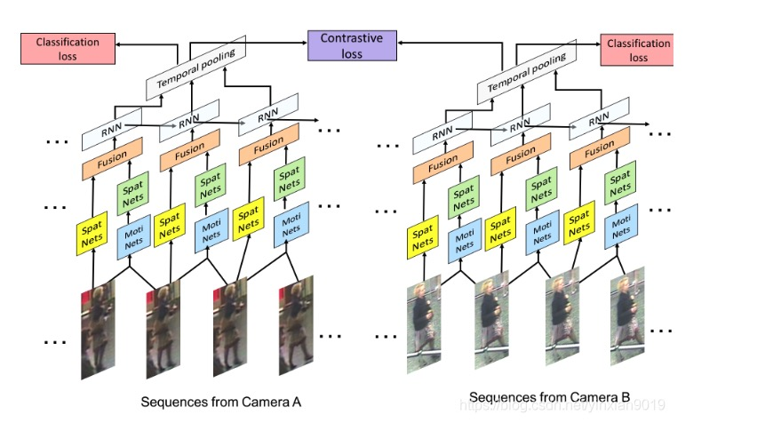
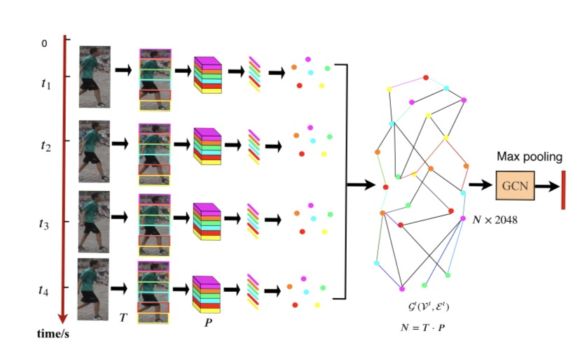

20032202050 左玉晖
Person Re-identification
简称为ReID，是利用计算机视觉技术判断图像或者视频序列中是否存在特定行人的技术。广泛被认为是一个图像检索的子问题。给定一个监控行人图像，检索跨设备下的该行人图像。
行人重识别可以干什么？
时空图卷积，图结构
图结构中结点的定义是什么？
结点和结点之间的联系是什么？(边)
结点的内在含义是什么？
前人工作及存在问题
不同摄像头造成行人外观的巨大变化
目标遮挡（Occlusion）导致部分特征丢失
不同的光照导致同一目标的特征差异
不同目标衣服颜色、特征近似导致区分度下降
和人脸识别那种，高清的对齐的图像不同
基于视频序列的ReID方法
CNN & RNN
temporal pooling & spatial-temporal attenttion
综合考虑空间位置和特征度深度之间的关系
AMOC(光流法)
论文对挑战的解决
1、仅使用外观特征不足以区分目标，但它们的身体结构信息是不同的。
办法：利用序列中各部分之间的时空关系可以缓解这些问题。(STGCN)
2.当边界框不完美，或者存在噪声或遮挡时，基于外观的要素可能效果不好。
办法：显式地利用不同帧之间补丁的时间关系，以缓解遮挡和不对准问题。
3.基于图像的识别最具挑战性的难点之一是如何区分视觉上相似的身份，而大多数基于图像的方法只能依赖于提取细粒度的外观特征。
办法：在基于视频的Re-ID中，相同身份的结构信息(例如形状信息)将更加完整和精确，因为每个视频具有许多帧，这些帧可能覆盖更多的视图和姿势。
如何构建图结构
将局部特征关系融合

模型设计
code
Temporal branch
Structural GCN Module(spatial relations branch)
loss function
batch hard triplet && softmax cross-entropy
Triplet loss 需要三份数据(可以从一个batch中选择)

从GCN公式角度看如何建模(空域)
GCN机制
信息传递&信息聚合&信息更新
构建图
\[\begin{aligned} Z=\sigma(A'FW+b) \end{aligned} \]
\[\begin{aligned} Z=f(X,A)=softmax(\hat A'_1 \sigma(\hat A'_0 XW^{(0)}) W^{(1)} ) \end{aligned} \]
实验对比
数据集
MARS: 有1261个身份id，的17503个tracklet和3,248个distractor序列。
DukeMTMC-VideoReID: 有1812个身份id，4832个tracklets
评估标准
rank1 && rank5
mAP值
对比其他模型(怀疑)

三分支搭配对比

与全连接对比提现GCN必要

创新点、贡献
(这个地方可以进一步改进)
(有堆积模型的嫌疑)
结论
1.利用斑块间的时间关系缓解遮挡问题
利用斑块间的空间关系区分外观相似的歧义样本的有效性。
2.提出STGCN模型
SGCN:空间分支通过建模各帧面片之间的关系来学习人体的结构信息。
TGCN:时态分支通过对不同帧之间的斑块的时态关系进行建模，可以缓解遮挡问题。
采用GNN的特性对提取的行人结构特征进行图建模(空域)，并通过时空图卷积挖掘帧内和帧间的潜在关系(时域)。把他们做联合，增强了区分能力和学习的鲁棒性，对基于视频序列的行人重识别领域中存在遮挡噪声识别性不强的问题，进行了有效解决。
未来方向，存在问题
超分辨率重构
基于人体骨骼关键点
各种各样的方法很多
现在跨域的问题比较难解决，怎么落地？
High-Order Information Matters: Learning Relation and Topology for Occluded Person Re-Identification(CVPR2020)
关键点局部特征提取+图卷积融合关键点特征+图匹配特征融合计算相似度并训练模型

两层GCN如何设计可以加深加复杂网络模型？
解决GCN过平滑问题